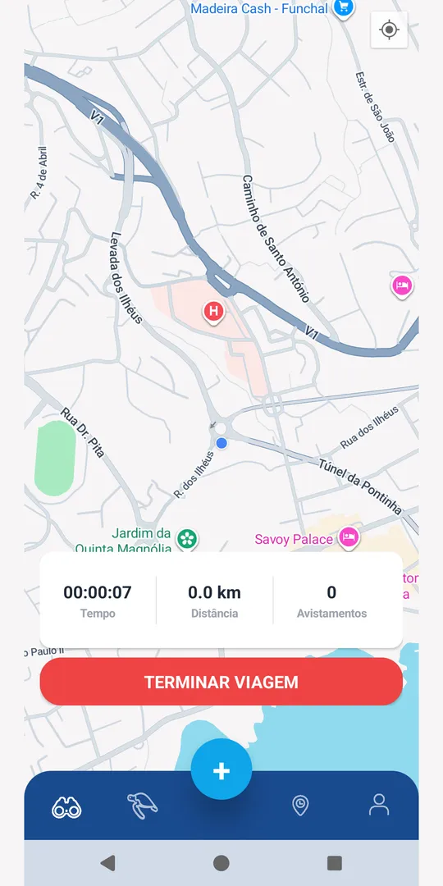
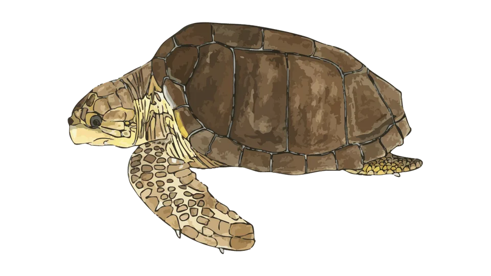
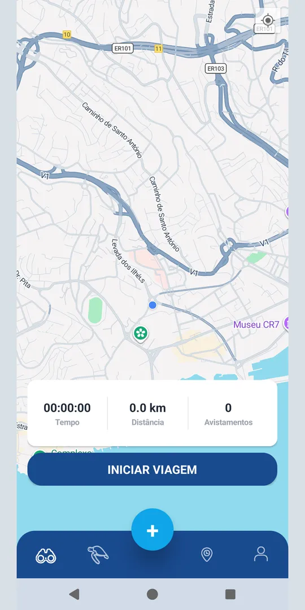
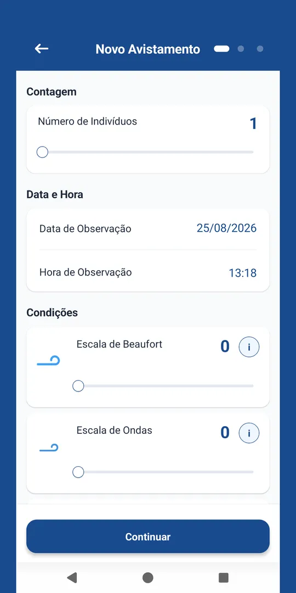
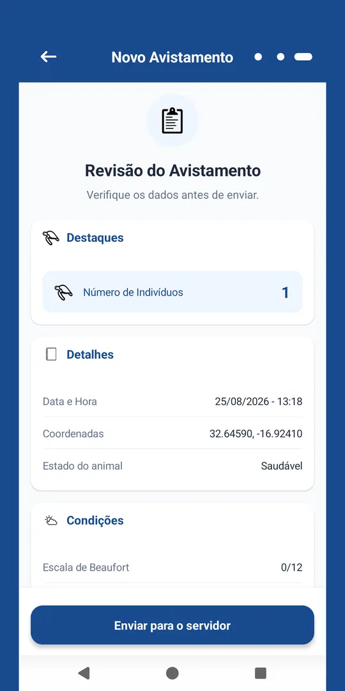
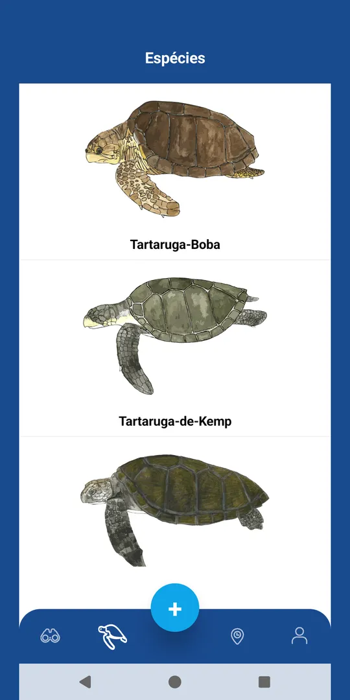
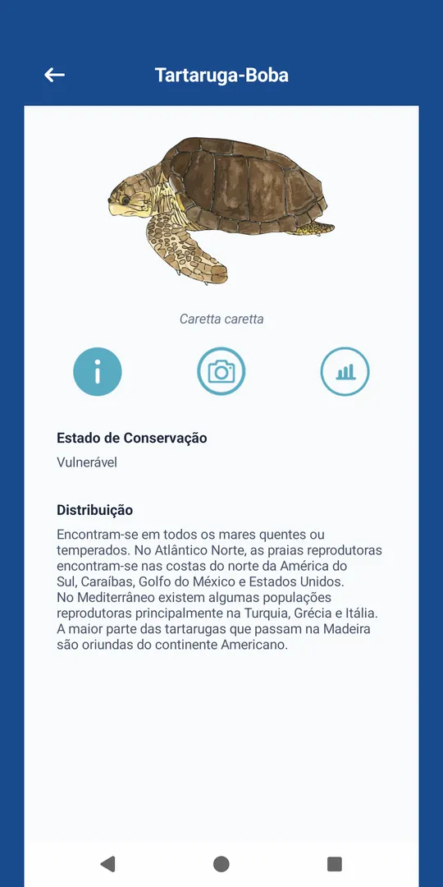
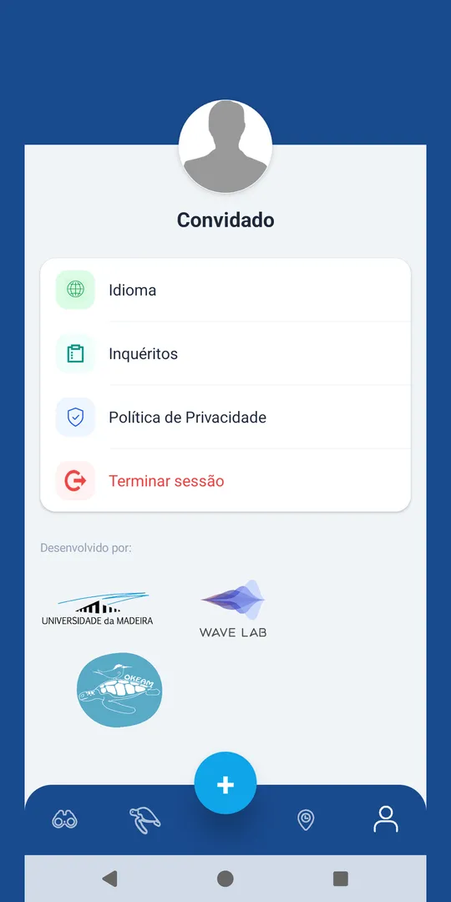
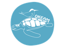

Registar avistamentosRecord sightings
Número de animais, estado, tamanho, espécies vistas e posição GPS automática.Number of animals, condition, size, species seen and automatic GPS position.
O TurtleReporter é uma app gratuita da Universidade da Madeira e do Wave Labs para registar avistamentos de tartarugas marinhas e o percurso da embarcação. Os dados vão diretamente para os investigadores. TurtleReporter is a free app by the University of Madeira and Wave Labs for recording sea turtle sightings and the boat's route. The data goes straight to the researchers.


Rápida de preencher com o barco a andar, e funciona mesmo sem rede.Quick to fill in on a moving boat, and it works without signal.
Número de animais, estado, tamanho, espécies vistas e posição GPS automática.Number of animals, condition, size, species seen and automatic GPS position.
O percurso fica gravado de 10 em 10 segundos, mesmo com o ecrã bloqueado. Tempo, distância e avistamentos sempre à vista.The route is recorded every 10 seconds, even with the screen locked. Time, distance and sightings always in view.
Sem cobertura, os registos ficam guardados no telemóvel e são enviados sozinhos quando houver ligação.Without coverage, records are kept on the phone and sent automatically once there is a connection.
Fichas das 7 espécies de tartarugas marinhas, com ilustrações, fotografias, estado de conservação e distribuição.Profiles of the 7 sea turtle species, with illustrations, photos, conservation status and distribution.
Crie uma conta ou entre como convidado, sem dados pessoais.Create an account or enter as a guest, with no personal data.
Ao sair para o mar, toque em «Iniciar viagem». O percurso começa a ser gravado.When you head out, tap “Start trip”. The route starts recording.
Viu uma tartaruga? Toque em «+», preencha em três passos e envie.Saw a turtle? Tap “+”, fill in three steps and send.
No regresso, toque em «Terminar viagem». A gravação para e tudo segue para os investigadores.On your way back, tap “End trip”. Recording stops and everything goes to the researchers.
Deslize para ver mais ecrãs.Swipe to see more screens.






Tudo o que precisa para a primeira saída. Toque num tema para abrir.Everything you need for your first trip. Tap a topic to open it.
Em alguns telemóveis (Samsung, Xiaomi…) a poupança de bateria pode parar a gravação. Se o percurso ficar com falhas, desative a otimização de bateria para o TurtleReporter nas definições do Android.On some phones (Samsung, Xiaomi…) battery saving may stop recording. If the route has gaps, turn off battery optimisation for TurtleReporter in the Android settings.
Os botões i junto de cada escala mostram ajuda. A posição é preenchida pelo GPS.The i buttons next to each scale show help. The position is filled in by the GPS.
Pode usar a app normalmente sem cobertura. Viagens, posições e avistamentos ficam guardados no telemóvel e são enviados automaticamente quando voltar a haver rede. Não feche a sessão nem desinstale a app antes disso.
You can use the app normally without coverage. Trips, positions and sightings are kept on the phone and sent automatically once there is signal again. Do not sign out or uninstall the app before that.
Ler a política de privacidade completaRead the full privacy policy
Na app: Perfil → Eliminar Conta. A conta e os dados pessoais são apagados de imediato; os avistamentos ficam apenas como dados científicos anónimos.
In the app: Profile → Delete Account. The account and personal data are deleted immediately; sightings remain only as anonymous scientific data.
Ver o que é apagado e o que ficaSee what is deleted and what is kept
Para identificar as espécies a bordo. Também disponível dentro da app.To identify species on board. Also available inside the app.
Um projeto de ciência cidadã da Universidade da Madeira e do Wave Labs (ITI/LARSyS, ARDITI) para estudar a distribuição das tartarugas marinhas no mar da Madeira.A citizen science project by the University of Madeira and Wave Labs (ITI/LARSyS, ARDITI) to study the distribution of sea turtles in the waters of Madeira.
